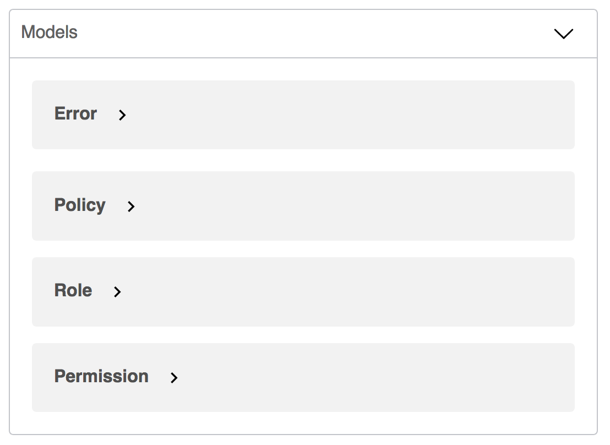

class: center, middle .swagger-logo-intro[] # How to love swagger .right[Kevin Choubacha] .right[August 2018] --- layout: true name: header .right[.swagger-logo-header[]] --- template: header # Swagger, misunderstood? Swagger has a few short comings: -- * It is kinda hard to read, -- at first... -- * It doesn't reflect a true json schema -- * It has some opinions -- * It's documentation... and can drift. -- However... --- template: header # Swagger, misunderstood? It has some benefits: -- * Reusable objects -- * It _is_ documentation -- * Test and execute queries (and build curl commands) -- * Templating and examples for QA --- template: header # What should it look like? * References used liberally to re-use components -- * Uses the names component types -- * Nearly all aspects of an endpoint abstracted away --- template: header # What should it look like? .scroll[ ```yaml paths: '/clients/{id}': get: tags: - clients summary: Show Client parameters: - $ref: '#/parameters/PathID' responses: '200': $ref: '#/responses/ClientShow' '403': $ref: '#/responses/InsufficientPermissions' '404': $ref: '#/responses/NotFound' patch: tags: - clients summary: Update Client parameters: - $ref: '#/parameters/PathID' - $ref: '#/parameters/UpdateClientBody' responses: '200': $ref: '#/responses/ClientShow' '403': $ref: '#/responses/InsufficientPermissions' '404': $ref: '#/responses/NotFound' '422': $ref: '#/responses/UnprocessableEntity' ``` ] --- template: header # Patterns and Features Making use of these patterns shrank our yaml file by over 600 lines! * References * Definitions * Primitives * Parameters * Responses * Authorization * Patterns for JsonApi --- template: header # References Use references to "import" another piece of the yaml file. This is something built into swagger and allows the easy reuse of objects from other parts of the file. ```yaml $ref: '#/responses/ClientShow' ``` They are declared with `$ref` and us an anchor pattern (the `#`) followed by the path to the object. Using these can drastically shrink the size of your swagger file. --- template: header # Definitions The definitions section feels like a dumping ground. -- .bold.red[Don't make this mistake!] -- It should be reserved for models: -- .center[  ] -- * It's shown as a section -- * For json-api, just the attribute sets are needed -- * Define the error object once! --- template: header # Definitions Error Model: .scroll[ ```yaml definitions: Error: properties: errors: type: array items: properties: detail: type: string example: Some error occurred and the request could not be processed source: properties: pointer: type: string example: /path/to/field/2/sub_field title: type: string example: Some random exception code: type: string example: 2-3 ``` ] --- template: header # Definitions Policy Model: .scroll[ ```yaml Policy: required: - resource - actions properties: resource: type: string example: logistics.organizations.123 actions: type: array * example: * - show * - update items: type: string ``` ] --- template: header # Primitives Put common primitives into an extension: ```yaml x-primitives: uuid: type: string format: uuid example: f6d72e08-75eb-400d-95f1-054a77ded07d ``` -- In use: ```yaml properties: id: * $ref: '#/x-primitives/uuid' ``` --- template: header # Parameters Requests take parameters, these are commonly repeated. Move them all to the `parameters` object: ```yaml parameters: PathID: * in: path name: id required: true type: string PathWRN: in: path name: resource_string required: true type: string description: Provide a WRN string such as "discovery.listing.12345" ``` --- template: header # Parameters (for Body) Use parameter definitions for body requests (in swagger 2.0). OpenAPI 3.0 has a separate location for request bodies .scroll[ ```yaml parameters: UpdateRoleBody: * in: body name: body description: The body to send when updating a role. * required: true schema: required: - data properties: data: required: - type - id - attributes properties: id: $ref: '#/x-primitives/uuid' type: $ref: '#/x-type/role' * attributes: * $ref: '#/definitions/Role' ``` ] --- template: header # Responses Responses should be grouped in the responses object. * Reuse common responses * Especially useful for errors * Can fetch schema from one response in another --- template: header # For common responses ```yaml responses: RelationToPolicyIndex: description: A list of policies. schema: $ref: '#/x-relations/Policy' RelationToRolesIndex: description: A list of roles schema: $ref: '#/x-relations/Role' ``` --- template: header # For Errors ```yaml responses: NotFound: description: Resource not found schema: * $ref: '#/definitions/Error' InsufficientPermissions: description: The JWT lacks permissions to access this endpoint. schema: * $ref: '#/definitions/Error' UnprocessableEntity: description: The body of the request is invalid and cannot be processed. schema: * $ref: '#/definitions/Error' ``` --- template: header # Re-use schemas For index routes (where there is no difference) ```yaml RoleIndex: description: A list of roles schema: properties: data: type: array items: * $ref: '#/responses/RoleShow/schema' ``` --- template: header # Authorization Set up security for headers: ```yaml securityDefinitions: bearerAuth: type: apiKey in: header name: Authorization description: 'Input the JWT along with the following template "bearer {JWT}"' security: - bearerAuth: [] ``` --- template: header # Authorization Click "Authorize" to store credentials once! .center[ ] --- template: header # Authorization .center[ ] --- template: header # Authorization In openapi 3.0.0 there are more powerful options! .center[ ] ```yaml components: securitySchemes: JWT: type: http scheme: bearer bearerFormat: JWT security: - JWT: [] ``` --- template: header # What about JSON Api? -- .center[ ## Use extensions! ] --- template: header # Declare types ```yaml x-type: role: type: string * enum: * - role * default: role policy: type: string enum: - policy default: policy ``` -- In use: ```yaml properties: type: $ref: '#/x-type/policy' ``` --- # Declare relations ```yaml x-relations: Policy: required: - data properties: data: type: array items: required: - id - type properties: id: $ref: '#/x-primitives/uuid' type: $ref: '#/x-type/policy' ``` --- template: header # Declare relations In use: .scroll[ ```yaml UpdateClientBody: in: body name: body description: The body to send when updating a user. schema: properties: id: $ref: '#/x-primitives/uuid' type: $ref: '#/x-type/client' relationships: * properties: * client_user_policies: * $ref: '#/x-relations/CreatePolicy' * client_only_policies: * $ref: '#/x-relations/CreatePolicy' * client_user_roles: * $ref: '#/x-relations/Role' * client_only_roles: * $ref: '#/x-relations/Role' ``` ] --- .middle.center[ # Questions? ]